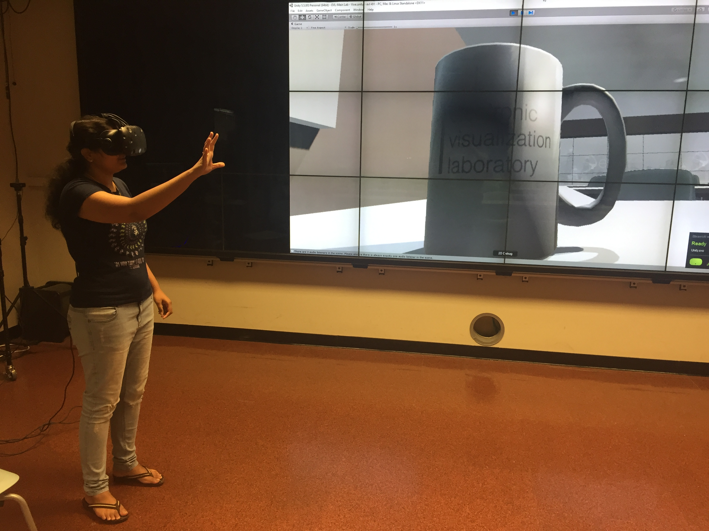
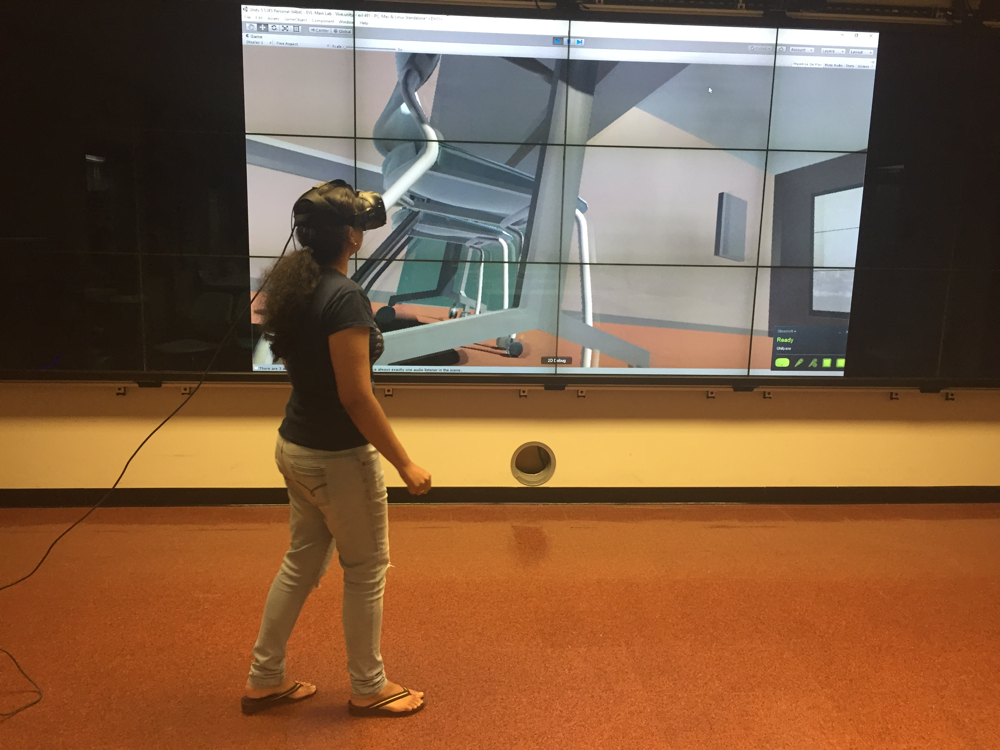

For this homework, I scaled up the scene (and the objects in the scene) in Project 1 and tried to navigate through the area. Here are a couple of pictures:


In the normal (1:1 scale) version, moving around and navigating the scene is fairly easy. Flying or teleporting or walking around the scene: whatever mode of navigation was chosen, it is simple and effective and the user can look around and have a general idea of where they are. In the scaled up version, things are not that easy, some of the things I noticed are:
- Since every object around the user is huge, the user will have a difficult time assessing their general location in the entire scene.
- Imperfections in the modeled objects, low resolution patterns and materials are more apparent. Segmented edges that are used to simulate rounded corners also become more pronounced.
- The field of view is drastically reduced, the extent to which the user can see becomes very less, this is particularly evident when there is a tall object blocking the user’s view or the surface is uneven.
- Walking around the scene to see everything is tough, there is a lot of ground to cover and just walking is slow and ineffective (walking on the table seemed like walking across the entire floor of the room). Even flying around took a lot of time while going from one place to another. The user can make use of teleportation but even then, the range/scope of easy movement is drastically decreased.
- If a user accidently walks into a shadow or a wall, it’s that much more difficult to come out of it due to it’s sheer size and the lack of the sense of direction.
+ Scaled up virtual models are really useful in design when the actual physical object is very small – for example in the design of very small things like microprocessors or gadgets like mobile phone or laptops where the space is very limited and the designer needs to fit multiple small objects in an efficient and effective way.
+ Scaled up models of human anatomy can be used in teaching and training doctors, this is extremely useful when planning for microsurgeries where the nerves/blood vessels are really small and even minute details are extremely important.
+ Scaled up versions of the real world are fun – they can be used in the entertainment industry, for example in making movies or games. It adds to the aspect of enjoyment and immersion in the experience.
+ Another application would be in the study of genetics especially in genetic engineering, the three dimensional and explorative nature of the scene will be useful in studying complex concepts like RNA translation or gene linkage. It’s also useful in microbiology – creating a virtual model of the microorganism and studying them might lead to better insights and understanding.
© Sai Priya Jyothula. All rights reserved.